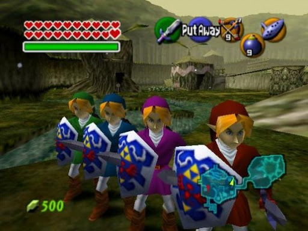
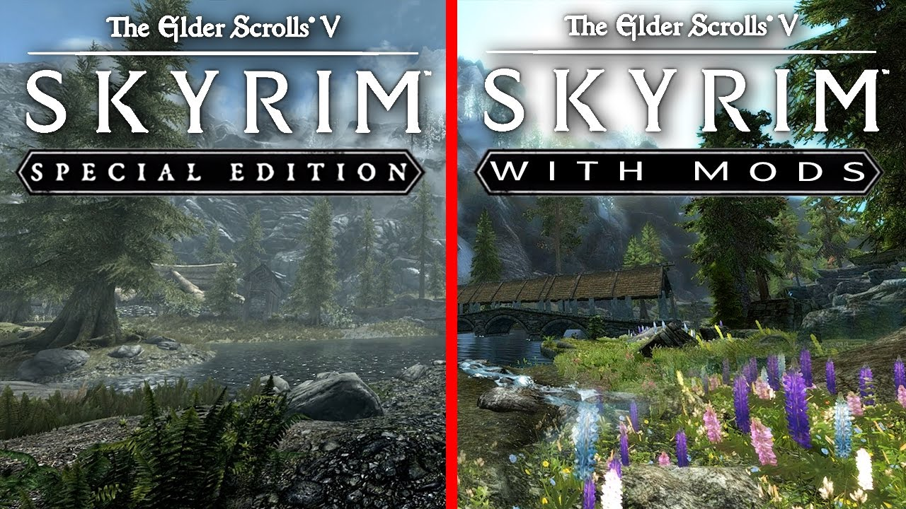
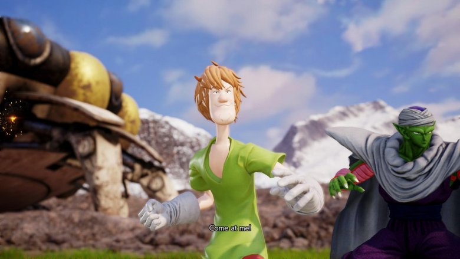
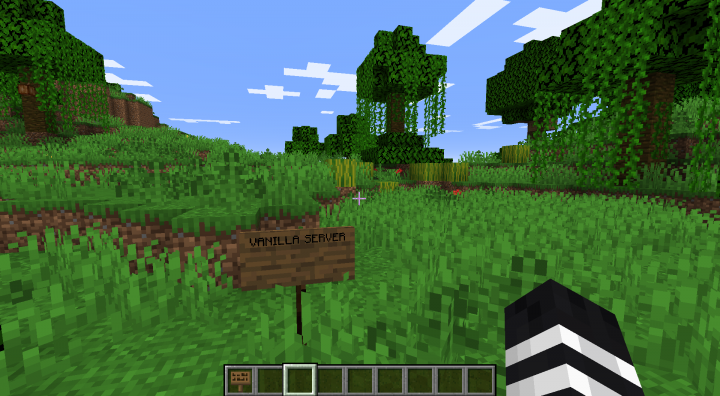
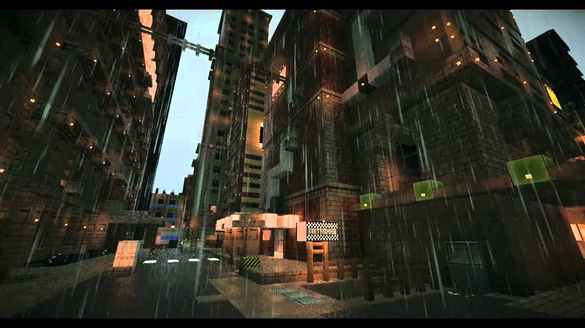

Dependiendo de la materias y herramientas correspondientes con que estes trabajando podras cambiar toda la codificaciones y el contenido, este no significa que necesariamente funcionara por varias razones, en algunos casos seras limitado por memoria o tamaño, y en otros impacta demasiado como siendo "hard-coded" lo cual tendrias que cambiar el programa tambien. Aunque pueda parecer como magia, es similar a los lenguajes de programas, hay mucho en que se puede hacer, pero errores pueden occurir, en algunos casos, son inconsecuente, pero en otros, ocure el bloqueo de programa, lo cual esencialmente rompe el juego, y en algunos casos no es detectable hasta el punto relevante del cambio, o en circunstancia especifica, tambien que pueden complicarse una modificacion con otra en adicional. Este puede causar algunos juegos siendo mas complejos en cambiar que otros, pero a pesar de las complicaciones, esto no detuvo a los creadores, y sus pasiones.
El limite majormente indeterminable entre todos los juegos es la imaginacion, uno puede cambiar la texturas, sombreadores, encendido, musica, sonido, colores, modelos, físicas, el supramundo, su diseño y que puede ocurrir por cada accíon entre otras. En lo esencial, los modificadores son Dioses sobre concepto digital. En lo siguiente se demostrara ejemplo de estos cambios.    

Back
Yo Juan Monsanto declaro esta asignacion de Projecto Final para el desarrollo de pagina web para la Universidad Interamericana de Puerto Rico del recinto de Ponce, publicado en el 8 de diciembre de 2020; es major parte mi propio trabajo. Las imagenes presente no son obras mia y pertenecen a sus publicadores original. La imagen de background en el titulo de cada pagina pertenece al author file404. Editada para convenencia. La imagen de background original para el body en toda la paginas pertenece a vreddane. Editada para convenencia. La imagenes de flechas para navegacion pertenece a Ocal. Editado para convenencia. La imagen de la creatividad en la pagina de posibilidades pertenece al author tatkuptsova La imagen del multiplayer mod de Ocarina of Time origina de esta pagina Zelda Universe La imagen Shaggy en Jump Force origina del Tweet de Beatz. La imagen de las modificaciones visuales de Skyrim origina de un video Youtube de Dakart El ejemplo de Vanilla Minecraft origina de esta pagina del author 0nefourth El ejemplo sombreador de Minecraft origino de este blog por Daniel He Hetianding. La imagen en la pagina de Por qué pertenece al author katedemianov. La texturas en la pagina de ejemplo fue creado para mi por JesseBizarreArt La frase cotizada eran la palabra de Satoru Iwata, el cuarto presidente de Nintendo que ha fallecido, dicho en la Conferencia de desarrolladores de juegos en el año 2006. La imagenes relacionada a Dolphin emulator fueron captura de pantalla, para la programacion sigue aqui. La imagenes relacionada al producto de Intelligent Systems, Paper Mario: The Thousand-Year Door (2004) [Gamecube] publicado por Nintendo fueron captura de pantalla. Intelligent Systems y Nintendo.